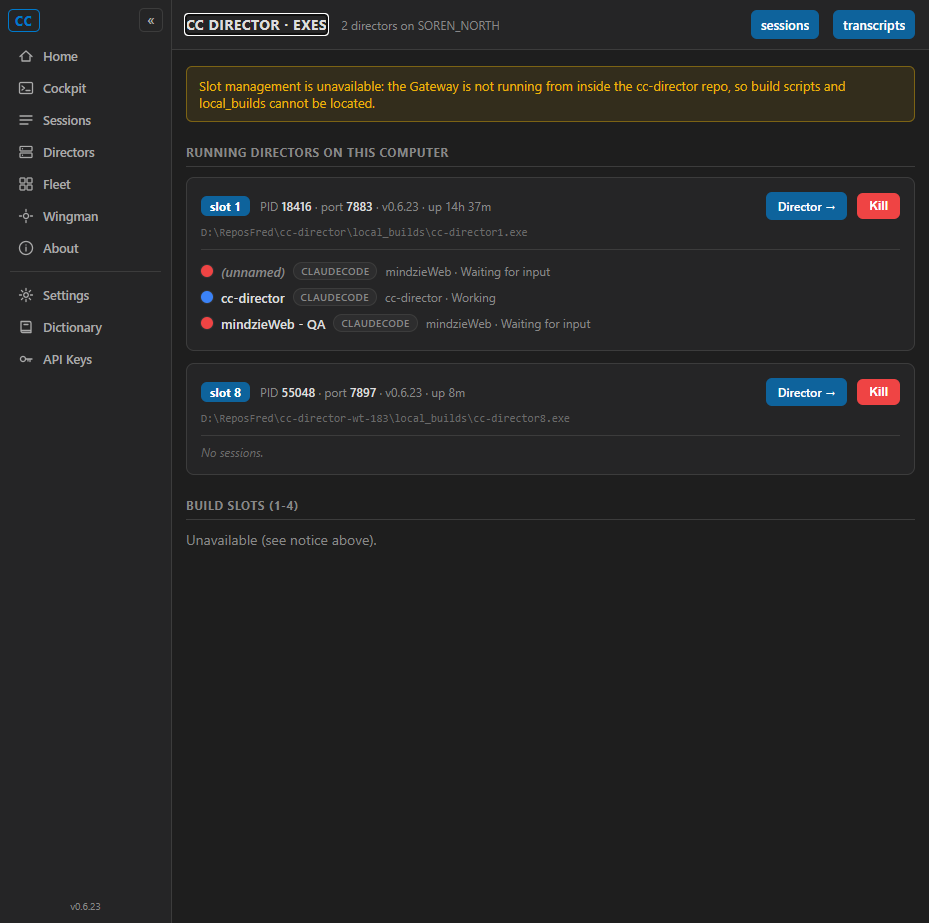
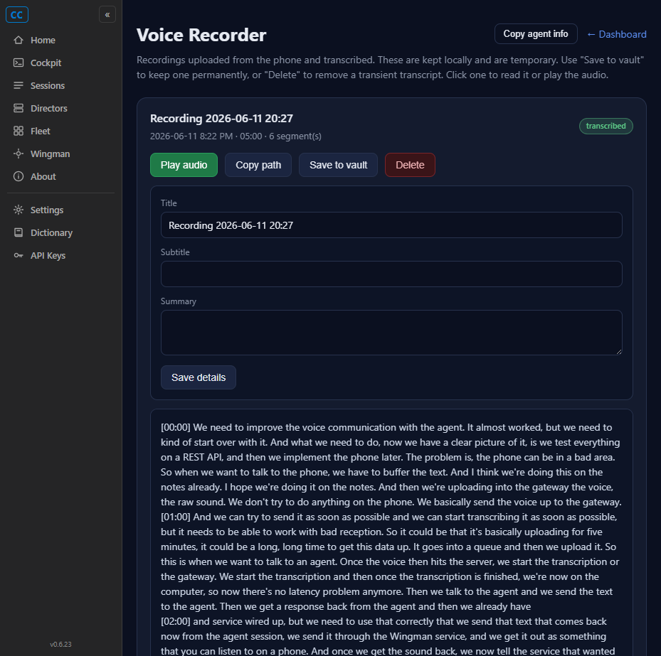
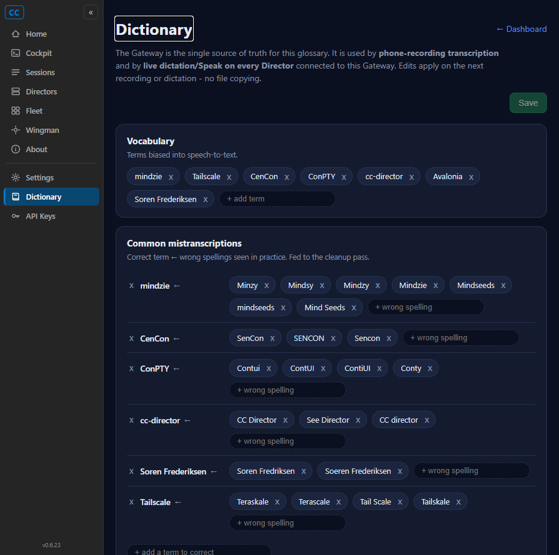
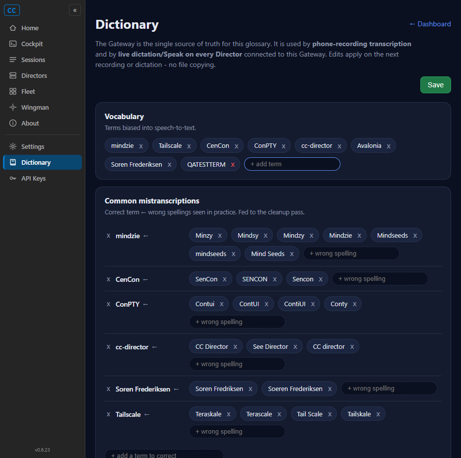
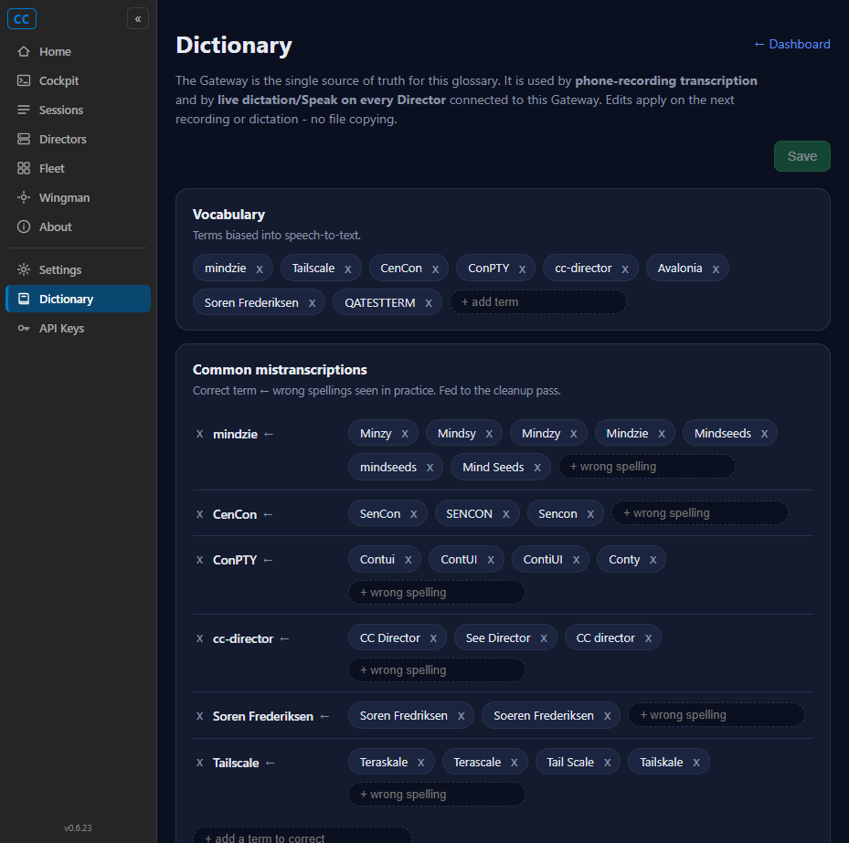
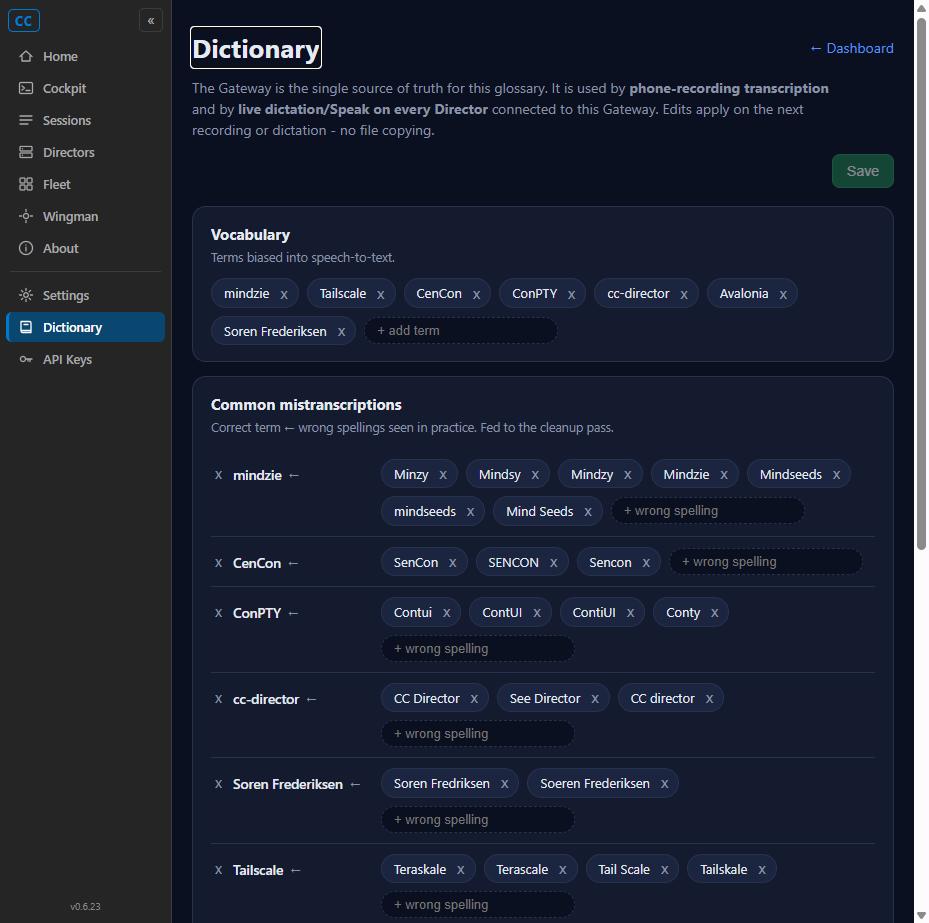

| Item | Value |
|---|---|
| Worktree | D:\ReposFred\cc-director-wt-183 at PR head fe0584a |
| Director slot (isolation) | slot 8 (cc-director8.exe, PID 55048, Control API 7897), launched via cc-director8-launch task |
| Cockpit under test | PR-branch Release publish, run on http://127.0.0.1:7471, GatewayUrl=127.0.0.1:7878 (live data) |
| Full-solution build | dotnet build cc-director.sln -> Build succeeded, 0 Warning(s), 0 Error(s) |
| Criterion | Expected | Actual | Result |
|---|---|---|---|
| Served by Blazor page; html + MapGet removed; Blazor .nv rail shows | Blazor page at /exes with the .nv rail; no exes.html / MapGet("/exes") | Source: exes.html deleted, MapGet("/exes") removed (Program.cs comment). UI: .nv rail present, H1 "CC DIRECTOR · EXES". See qa-exes.png | PASS |
| Running Directors with same fields + sessions with colored dots | slot badge, PID, port, version, uptime, exe path, sessions with status dots | "2 directors on SOREN_NORTH"; slot 1 PID 18416 port 7883 v0.6.23 up 14h, exe path, sessions (red WaitingForInput, blue Working); slot 8 (my own) shown - live data. See qa-exes.png | PASS |
| Build slots 1-4 grid | slots grid with status/size/last-built when repoRoot present | Gateway runs OUTSIDE the repo (repoRoot=""), so the slots grid is by-design unavailable. Verified the alternate (repoRoot-null) branch instead - see next row. Slot-rendering code path present in Exes.razor (lines 130-138). Expected vs Actual stated per criterion's allowance. | PASS (by fallback) |
| Kill / Build / Delete call same endpoints, same enable/disable | DELETE /directors/{id} {force:true}, POST /exes/slots/{n}/build-start, DELETE /exes/slots/{n}; Delete disabled when missing/running, Build disabled when running | GatewayClient verified: KillDirectorAsync=DELETE directors/{id}+{force:true}; BuildStartSlotAsync=POST exes/slots/{n}/build-start; DeleteSlotAsync=DELETE exes/slots/{n}. Disable: Build running||_busy, Delete !Exists||running||_busy. Kill button rendered (qa-exes.png); confirm via native ccTools.confirm. | PASS |
| repoRoot null -> notice + "Unavailable" | slot-management notice + slots area "Unavailable" | "Slot management is unavailable: the Gateway is not running from inside the cc-director repo..." + "BUILD SLOTS (1-4): Unavailable (see notice above)". See qa-exes.png | PASS |

| Criterion | Expected | Actual | Result |
|---|---|---|---|
| Blazor page; html + MapGet removed; /voice redirect works; .nv rail | Blazor /transcripts with rail; /voice 302 -> /transcripts | Source: transcripts.html deleted, MapGet removed, /voice redirect kept. UI: .nv rail + "Voice Recorder" title. curl /voice -> 302 Location /transcripts. See qa-transcripts-list.png | PASS |
| Recordings list same per-recording content | title, date/duration/segment meta, transcribed/state + in-vault badges | 4 recordings: title, "2026-06-11 8:22 PM · 05:00 · 6 segment(s)", "transcribed" badge - live data from /ingest/recordings. See qa-transcripts-list.png | PASS |
| Expand loads transcript; Play/Copy path/Save to vault/Delete | transcript text + audio-by-segment + actions, same endpoints | Expanding loaded the full timestamped transcript ([00:00].. [02:00]..); buttons Play audio / Copy path / Save to vault / Delete rendered. Endpoints in GatewayClient: GET .../transcript, DELETE .../{id}, POST .../promote; audio GET .../audio/{i} in tool-pages.js. See qa-transcripts-expanded.png | PASS |
| Inline Title/Subtitle/Summary -> PATCH meta; Copy agent info | edit fields save via PATCH .../meta; Copy agent info -> GET /ingest/agent-info | Title/Subtitle/Summary inputs + "Save details" rendered; "Copy agent info" button present. GatewayClient: UpdateMeta=PATCH .../meta, GetAgentInfo=GET ingest/agent-info. See qa-transcripts-expanded.png | PASS |

| Criterion | Expected | Actual | Result |
|---|---|---|---|
| Blazor page; html + MapGet removed; .nv rail; active item highlights | Blazor /dictionary; rail Dictionary item active | Source: dictionary.html deleted, MapGet removed. UI: .nv rail with the "Dictionary" item highlighted active. See qa-dictionary.png | PASS |
| Vocabulary, mistranscriptions, profiles render from live data | chips, term-arrow-variant rows, profile cards | Vocabulary chips (mindzie, Tailscale, CenCon, ConPTY, cc-director, Avalonia, Soren Frederiksen); mistranscription rows (mindzie ← Minzy/Mindsy/.., CenCon ← .., etc.); profiles default/code/email with cleanup toggle - all from GET /ingest/dictionary. See qa-dictionary.png | PASS |
| Add/remove, profile toggle, undeletable "default", dirty-state Save -> PUT, re-render | Save disabled on load, enabled after edit, PUT persists, "default" has no remove | Save disabled on load. Added vocab "QATESTTERM" -> chip rendered + Save ENABLED. Clicked Save -> "Saved" + Save disabled; Gateway /ingest/dictionary then contained QATESTTERM (PUT persisted + re-rendered). Removed it + Saved -> Gateway restored (term gone), leaving live data untouched. "default" profile has no remove x (RemoveProfile early-returns for "default"). See qa-dictionary-dirty.png, qa-dictionary-saved.png, qa-dictionary-profiles.png | PASS |




| Criterion | Result |
|---|---|
| dotnet build cc-director.sln clean | PASS - Build succeeded, 0 Warning(s), 0 Error(s) |
| No behavior regression (each page same live data + actions) | PASS - verified per-page above against the live Gateway |
| Visual parity (dark VS Code style, VisualStyle.md) | PASS - all three pages keep the dark navy palette and the shared .nv rail |
| Negative sweep / no console or server errors | PASS - no errors/exceptions in the Cockpit log during the whole QA session |
| Method / CenCon | PASS - front-end-only conversion; no REST/API, architecture, or security change; no DT rule touched; only CcDirector.Cockpit changed |